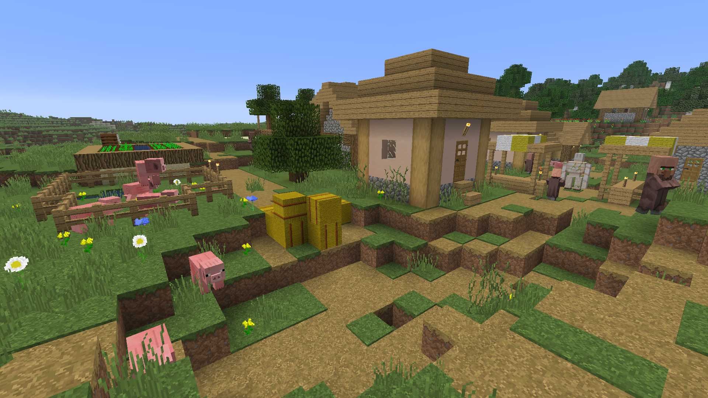
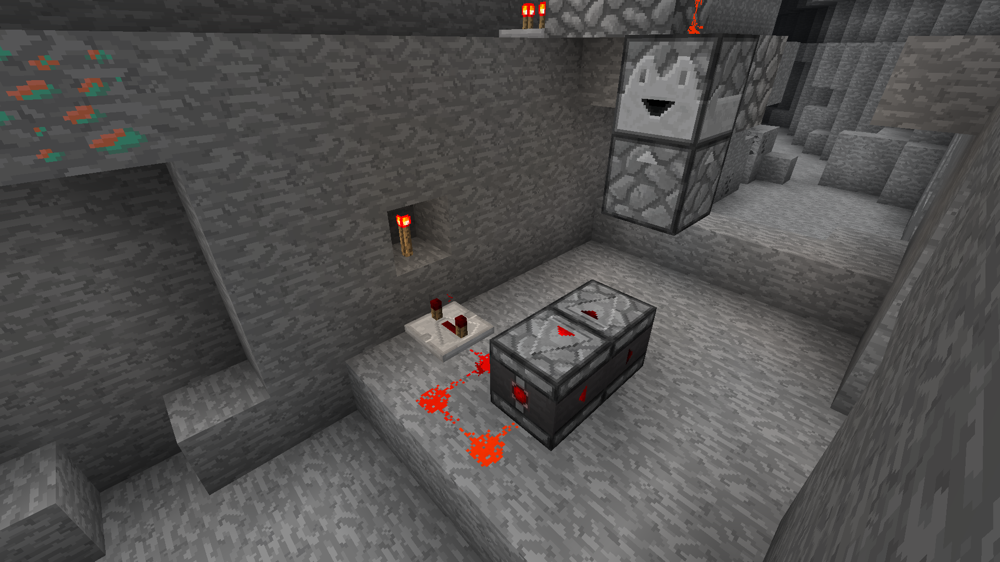
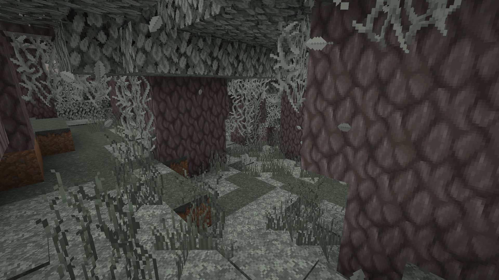
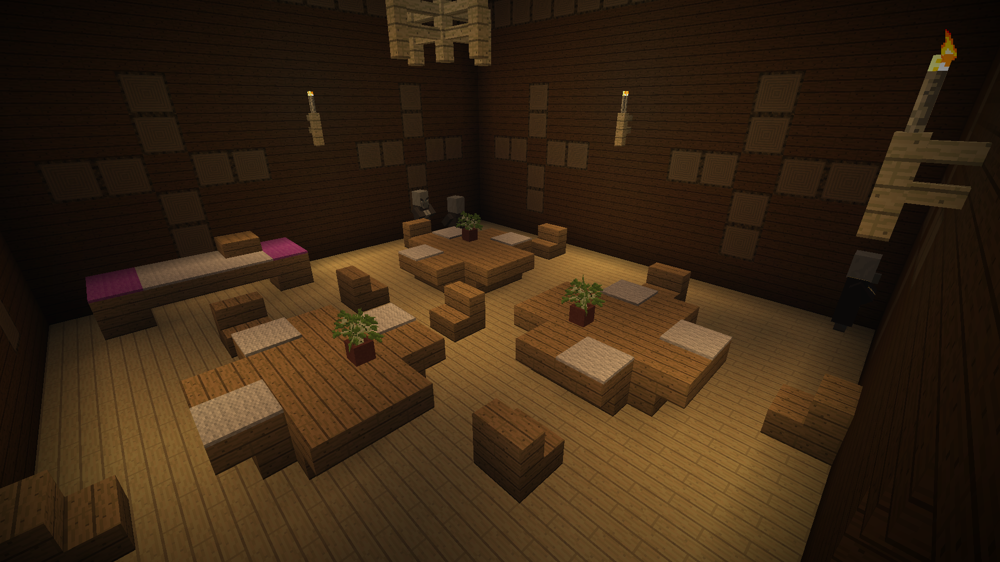

Faithful Legacy
Le pack de textures a été créé à l'origine par Vattic en 2010.
⚠ Ce pack n'est pas affilié à l'équipe Faithful, ce pack a été créé pour mon confort personnel et n'est pas destiné à être rendu public.
Galerie



